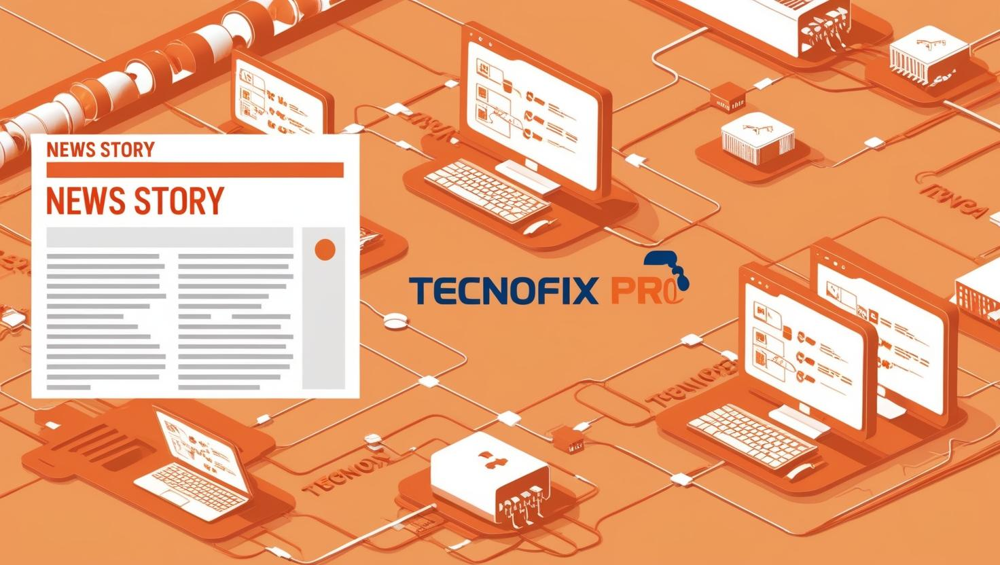

Cómo TecnoFix Pro Revoluciona la Logística en el Soporte Técnico y la Distribución de Hardware y Software
Innovación, eficiencia y tecnología: el futuro del mantenimiento informático está aquí
En un mundo cada vez más digitalizado, donde la infraestructura tecnológica de las empresas depende de sistemas robustos y en funcionamiento constante, la logística del soporte técnico y la distribución de hardware y software juegan un papel clave. TecnoFix Pro, empresa líder en mantenimiento y reparación de sistemas informáticos, ha desarrollado una estrategia innovadora para optimizar estos procesos, garantizando mayor rapidez, eficiencia y seguridad en la gestión de incidencias.
La logística del soporte técnico: un pilar fundamental en la transformación digital
La logística no solo es el transporte de bienes físicos; en el sector tecnológico, implica la correcta planificación, gestión y ejecución del soporte técnico, mantenimiento preventivo y distribución de recursos informáticos. Para muchas empresas, la falta de una estrategia estructurada en esta área genera fallos recurrentes, tiempos de inactividad prolongados y costos innecesarios.
Es aquí donde TecnoFix Pro marca la diferencia. A través de una infraestructura digital avanzada y procesos automatizados, ha redefinido la forma en que las empresas acceden al mantenimiento informático y reciben sus equipos de hardware y software de manera segura.
Soluciones digitales avanzadas para una logística optimizada
TecnoFix Pro ha implementado una serie de herramientas tecnológicas que permiten ofrecer un servicio más eficiente y accesible para empresas de cualquier tamaño.
1. Gestión de Soporte Técnico con Inteligencia Artificial
La implementación de un software de gestión de incidencias y tickets ha permitido que los clientes de TecnoFix Pro puedan reportar problemas en tiempo real y recibir asistencia sin demoras.
- Automatización del diagnóstico: Un sistema basado en IA analiza las solicitudes y sugiere soluciones automáticas para problemas recurrentes, reduciendo el tiempo de respuesta en un 40%.
- Historial de soporte centralizado: Cada cliente tiene acceso a su historial de incidencias, lo que permite a los técnicos tomar decisiones informadas basadas en intervenciones anteriores.
- Plataforma multicanal: Soporte disponible a través de chat en vivo, correo electrónico y llamadas, asegurando que las empresas siempre tengan un canal disponible.
2. Mantenimiento Preventivo y Gestión Remota: un cambio de paradigma
Uno de los mayores problemas en la logística del soporte técnico es la necesidad de desplazamientos constantes para la resolución de incidencias. Esto supone costos adicionales y tiempos de inactividad prolongados.
Para evitar estos problemas, TecnoFix Pro ha desarrollado un sistema de mantenimiento preventivo y monitoreo en tiempo real.
- Monitoreo automatizado de hardware y software: Cada dispositivo conectado al sistema envía datos sobre su estado y rendimiento, lo que permite detectar posibles fallos antes de que ocurran.
- Alertas inteligentes: Los clientes reciben notificaciones en tiempo real sobre el estado de sus equipos, lo que les permite anticiparse a problemas críticos.
- Acceso remoto seguro: Gracias a tecnologías de cifrado avanzado, los técnicos pueden realizar diagnósticos y reparaciones sin necesidad de desplazamientos físicos, reduciendo el tiempo de resolución en un 70%.
3. Ciberseguridad y Protección de Datos: una prioridad absoluta
En la era digital, la ciberseguridad es un factor determinante para la continuidad operativa de cualquier empresa. Un ataque o una vulnerabilidad puede causar pérdidas millonarias en cuestión de minutos. TecnoFix Pro ha incorporado soluciones avanzadas para garantizar la protección de los sistemas de sus clientes.
- Firewall de última generación y detección de amenazas en tiempo real.
- Backup automatizado en la nube con recuperación inmediata en caso de fallos.
- Autenticación multifactor para acceso seguro a plataformas y sistemas críticos.
La digitalización como motor del cambio en el soporte técnico
La adopción de un sistema de ERP (Enterprise Resource Planning) ha sido clave en la transformación de la logística de soporte técnico en TecnoFix Pro.
- Automatización de procesos administrativos: Facturación electrónica, control de contratos de servicio y gestión documental en la nube, eliminando la necesidad de documentos físicos y agilizando la operativa.
- Optimización de recursos: Con un sistema centralizado, se puede gestionar de manera eficiente la asignación de técnicos, materiales y repuestos, reduciendo los tiempos de espera en un 35%.
- Mayor accesibilidad para los clientes: Un portal exclusivo donde cada empresa puede visualizar el estado de sus solicitudes, gestionar tickets y realizar pagos de forma segura.
Beneficios directos para las empresas que trabajan con TecnoFix Pro
La implementación de estas soluciones ha permitido a TecnoFix Pro ofrecer un servicio más ágil y efectivo, con beneficios claros para sus clientes:
- Reducción del 50% en los tiempos de respuesta para incidencias críticas.
- Disminución del 60% en el número de fallos técnicos recurrentes, gracias al mantenimiento preventivo.
- Ahorro del 30% en costos operativos para empresas que han implementado monitoreo remoto y acceso digital.
Conclusión: el futuro del soporte técnico es digital y automatizado
La logística en el sector del soporte técnico y la distribución de hardware y software ha evolucionado. TecnoFix Pro ha sabido adaptarse a las necesidades del mercado actual, combinando innovación, automatización y seguridad para ofrecer un servicio de primer nivel.
Las empresas que han confiado en esta transformación han visto una mejora significativa en la eficiencia de sus operaciones, logrando una infraestructura tecnológica más estable, segura y rentable.


Georgia Reader Reply
La logística en el soporte técnico es clave para evitar retrasos. Me encanta cómo TecnoFix Pro usa IA y automatización para optimizar el proceso.